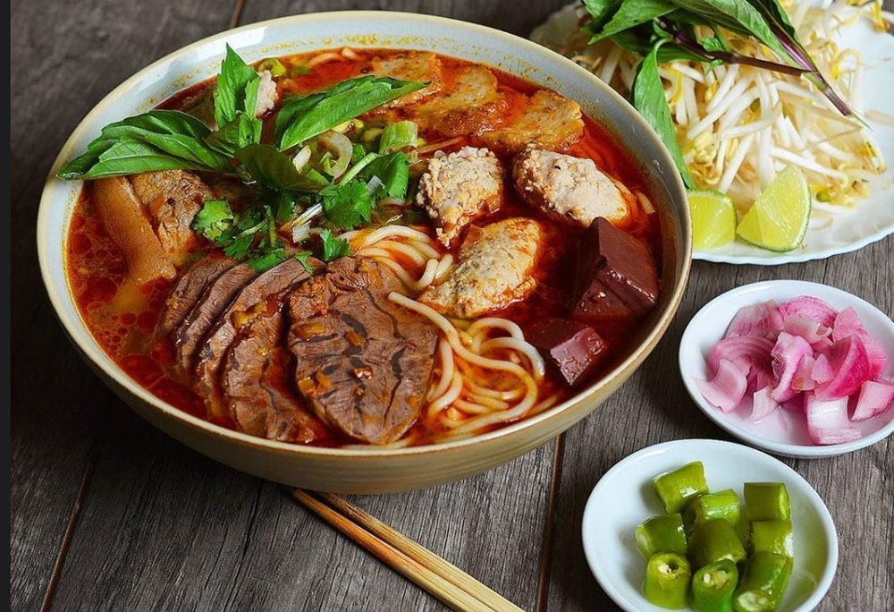

Thư viện hình ảnh
Toàn bộ ảnh trong thư viện đều là ảnh thật — ảnh điểm đến lấy từ Wikimedia Commons, ảnh ẩm thực do nhóm sưu tầm — nguồn được ghi đầy đủ bên dưới.



Toàn bộ ảnh trong thư viện đều là ảnh thật — ảnh điểm đến lấy từ Wikimedia Commons, ảnh ẩm thực do nhóm sưu tầm — nguồn được ghi đầy đủ bên dưới.
